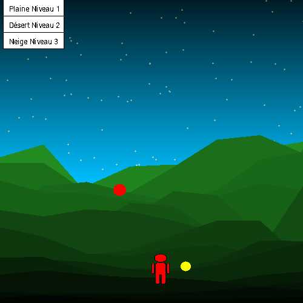
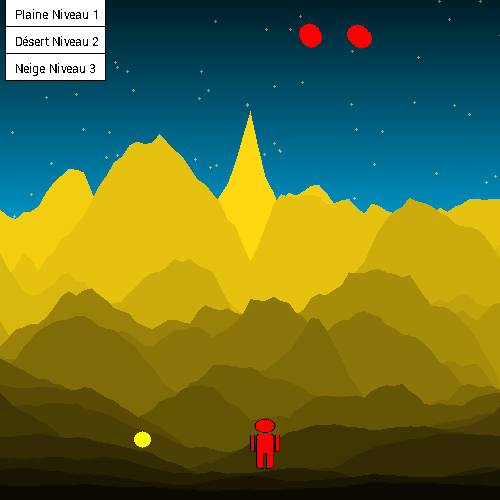
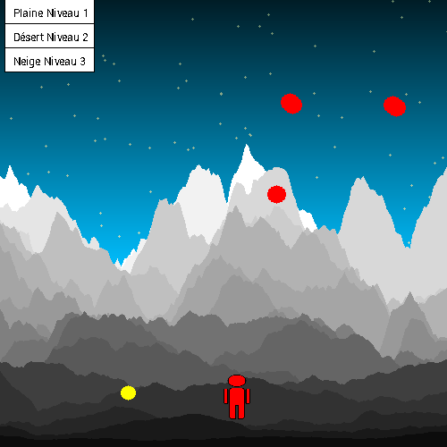

Présentation du Projet
Réalisé en première année de licence, ce mini-projet en C++ (développé avec Code::Blocks et la bibliothèque Grapic) explore la génération procédurale de paysages. L'objectif était de créer des environnements variés et réalistes à l'aide de l'algorithme du Bruit de Perlin, et d'y intégrer une boucle de jeu dynamique.
Mécaniques de Jeu
Le joueur contrôle un personnage devant naviguer dans des mondes générés aléatoirement avec un objectif simple mais à difficulté croissante :
- Objectif : Collecter 30 pièces (cercles jaunes) dispersées dans le niveau.
- Obstacles : Éviter les particules ennemies (cercles rouges) qui se déplacent aléatoirement. Le jeu gère la friction et le déplacement dynamique des entités.
Les Biomes (Niveaux)
Le jeu propose trois niveaux de difficulté, chacun générant un écosystème unique grâce au paramétrage du bruit de Perlin :

Niveau 1 : Plaine (1 obstacle)

Niveau 2 : Désert (2 obstacles)

Niveau 3 : Neige (3 obstacles)
Architecture et Code
L'architecture du code a été structurée autour de plusieurs entités pour séparer la logique du jeu du rendu graphique :
- Gestion physique : Une structure
Complexgère les positions et les forces appliquées aux entités. - Génération du monde : Les structures
Altitude,CouleuretMontagnedéfinissent la topologie du terrain généré procéduralement via la fonctionmondeInit. - Boucle de jeu : La fonction
updategère la mise à jour de l'état du jeu à chaque itération (déplacements, friction, collisions), tandis que la fonctionmondeDraws'occupe du rendu visuel, incluant un dégradé de fond dynamique.